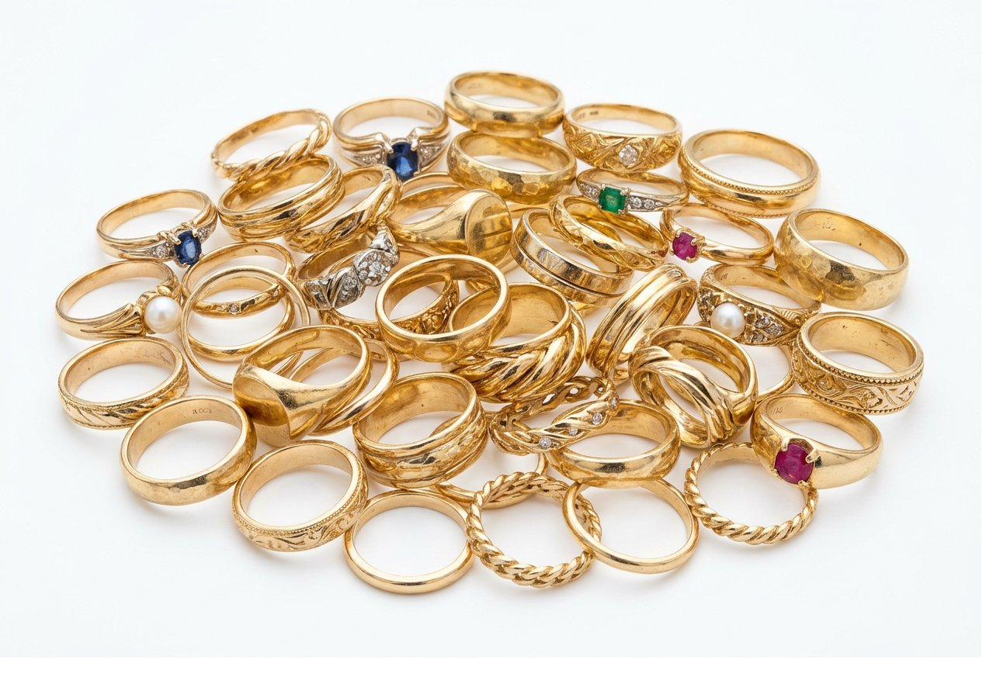
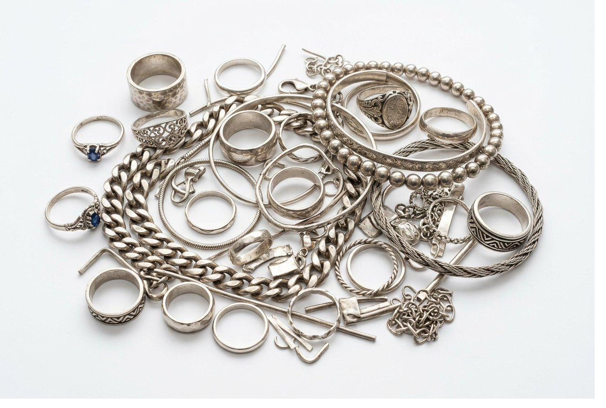
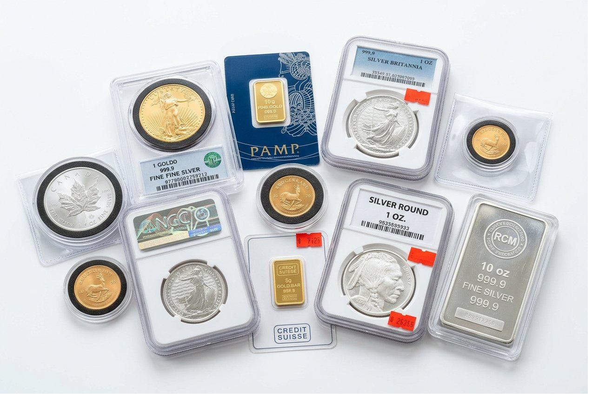
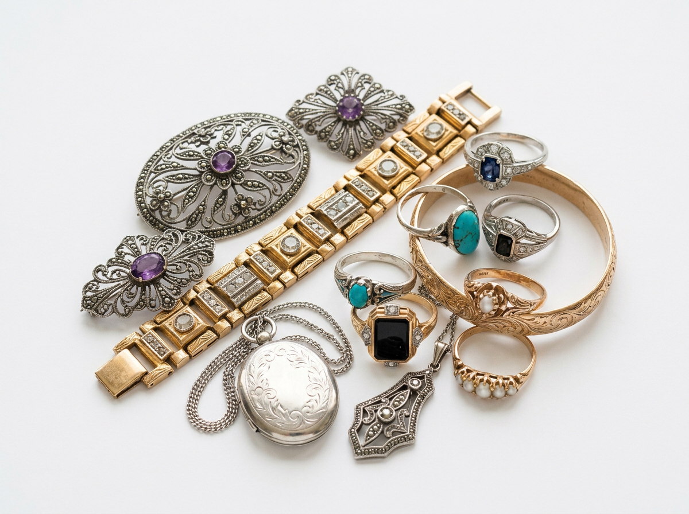
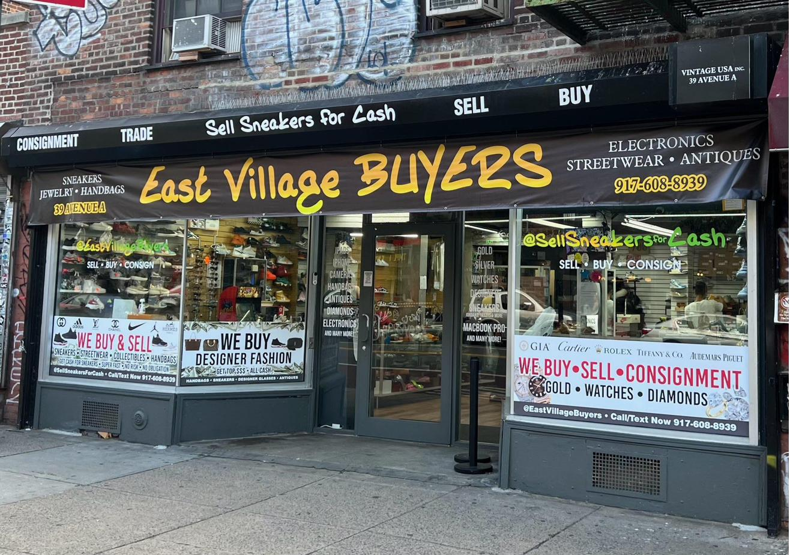

Home › Jewelry
Categories
What We Buy
Browse by category or bring everything in — we'll sort it out at the counter.

Today's spot price, weighed where you can see it. Broken stuff and lone earrings totally fine.

Rings, loose stones, with or without a cert — we'll talk you through it face to face.

Rings, chains, tarnished cuffs — if it's real sterling, we'll weigh it right here.

Bands, scrap, watch cases — we verify platinum on the spot, diamonds and all.

Grandma's flatware drawer? Forks, trays, tea sets — real sterling, priced by weight.

Eagles, Morgans, junk silver, bars — we'll check them at the counter, not over the phone.

One ring or a whole jewelry box — we're gentle with inherited stuff and probate situations.

Loose stones, colored gems, and diamonds — certified or not, we'll evaluate in person.

Signed pieces with real hallmarks — we pay for the name and the metal when auth checks out.
What We Buy
Sell to East Village Buyers
We're a real shop at 39 Avenue A — walk in with anything from a single broken chain to a full inherited collection. We test and weigh everything at the counter in front of you, explain the numbers plainly, and pay cash the same day if you like the offer. No mail-in, no hidden fees, no pressure.

How It Works
Sell in One Visit
Most folks are in and out in about 15–30 minutes. Checking what you've got is completely free — you only sell if the number feels right. Same friendly process whether you're holding one gold chain or your mom's entire jewelry box.
-
Walk in (or text us first)
Grab your jewelry and a valid photo ID and come to 39 Avenue A. Selling a big estate lot, an engagement ring, or something designer? Text photos to 917-608-8939 ahead of time — it helps us set aside time and gives you a better idea of what to expect before you make the trip.
-
We test and weigh right in front of you
We'll check karat and purity at the counter — acid test, electronic tester, or XRF when we need to. Everything goes on a calibrated scale you can see. Stamps like 14K, 585, or 925 are a starting point, but we always verify. We don't guess from a hallmark alone.
-
We walk you through the offer — zero pressure
We'll explain how today's gold spot, the diamond grade, designer name, or just plain scrap weight adds up to your number. Shop around if you want — there's no charge for the look-see and no hard sell if you need to think it over.
-
Say yes and get paid today
If you're happy with the offer, you walk out with cash the same day. Really big lots can sometimes be paid by check if you prefer — just ask us at the counter and we'll work with you.
We Buy & Sell Gold in NYC
10K–24K gold, broken chains, single earrings, dental gold, and gold watches.
Gold's gold — whether it's a Cuban link, a class ring, or a tangled knot of chains from a drawer that hasn't been opened in twenty years. We buy it every day, priced off the live spot market (the same number you'd Google if you searched cash for gold NYC). You'll see the weight and karat on our scale before you decide anything. No mail-in kit that "revised" your offer, no guessing from across the counter.
What types of gold do you buy?
Pretty much all of it. 10K, 14K, 18K, 22K, 24K. Yellow, white, rose gold. European stamps like 585, 750 and 916 too. Higher karat means more gold per gram but even a heavy 10K chain adds up more than people expect.
Do you buy broken gold jewelry and single earrings?
Yes. Broken links, tangled messes, single earrings with no mate, bent clasps. We see this stuff every day. You get paid on the actual weight and karat so it doesn't matter how it looks. That lone earring sitting in a dish is probably worth more than you think.
How is gold jewelry priced?
Weight times purity times today's spot price. We test the karat at the counter, weigh it on a scale you can see, and walk you through it. Gold moves every day so anyone giving you a firm number over text without seeing it is just guessing.
How do you test gold without a stamp?
We test it. Acid test, electronic tester, or XRF when we need to. A lot of old estate pieces have worn off stamps or were never marked. Plenty of rings that look questionable turn out to be real gold once we check.
What is the difference between gold-plated and gold-filled?
Gold plated like GP or HGE is a super thin coating over brass. Not worth much. Gold filled like 1/10 14K GF is a thicker bonded layer and sometimes worth buying depending on the weight. Not sure which you have? Bring it in and we'll tell you in two minutes.
Do you buy dental gold?
Yes we do. Crowns, bridges, dental sweeps. Pull out any obvious plastic if you can but don't stress about every little piece. It feels a little odd to sell old dental work but it happens all the time and the gold is very real.
Do you buy gold watches?
Gold cases and bracelets yes. We look at the case separately from the movement. A working movement can add value but a dead quartz usually doesn't change things much. Bring the whole watch and we'll go through it with you.
Do you buy gold coins and bars?
Yes. Eagles, Buffalos, Maple Leafs, Krugerrands, bars from refiners, world coins. Original packaging is nice but you don't need it. Check our Coins section below for the full list.
Should I clean my gold before the appraisal?
You don't have to. A light rinse is fine but don't use harsh chemicals especially on anything that might be plated. Tarnish on real gold doesn't affect anything. We're weighing metal not judging how shiny it is.
Do you buy inherited gold jewelry?
Totally normal. People do this every day for all kinds of reasons. Bills, splitting an estate, or just knowing they'll never wear it. We keep it low key and don't make it weird. Bring what you have and we'll go through it together.
 Diamond Buyer · NYC
Diamond Buyer · NYC
We Buy & Sell Diamonds in NYC
Engagement rings, wedding bands, loose stones, and estate diamonds.
Engagement rings, loose stones, grandma's old mine cut — we look at diamonds in person, right here on Avenue A. Got a GIA or IGI cert? Great, bring it. No cert? That's normal too. If the ring says Tiffany or Cartier on the inside and we can back up the authenticity, the mounting can add real value on top of the stone.
Do you buy diamonds without a certificate?
All the time. A cert makes things easier but plenty of good stones never had one. We grade it in person and explain what we see. Ask as many questions as you want.
Can I sell my engagement ring here?
Yes. Life changes and selling a ring is way more common than people realize. Bring the ring, any paperwork you have, and your ID. No appointment needed. No lecture. Just a straight offer.
What types of diamond jewelry do you buy?
Solitaires, halos, three stone rings, wedding bands, studs, tennis bracelets, pendants, eternity bands. Loose stones too. If there's a real diamond in it we want to see it.
Do you buy estate and vintage cut diamonds?
Yes. Old mine, old European and transitional cuts show up in estate pieces all the time. They grade a little differently than modern rounds but that's fine. We price them for what they actually are.
Do you buy chipped or damaged diamonds?
Don't write it off. Chips and worn prongs affect value but they don't always kill an offer. Bring it in and let us look. You'd be surprised sometimes.
Do you buy lab-grown diamonds?
Yes. We identify them and price them on the current lab market which is separate from natural diamond pricing. If you were told yours is natural and you're not sure we'll tell you exactly what we see.
Does the brand on the ring affect the offer?
Sometimes quite a bit. A real Cartier or Tiffany or Harry Winston mounting adds real value on top of the stone when hallmarks and construction check out. We don't just assume every signed piece is legit but when it is we factor it in.
How is a diamond offer different from a retail appraisal?
Your insurance appraisal shows what a store would charge to replace the piece. That's not what a buyer pays. We go off current market. The 4Cs, demand right now, and whether the setting adds anything. We'll walk you through the difference so it actually makes sense.
Can I send photos of my diamond before visiting?
Sure. Send clear photos of the ring, the stone, and any stamps or certs to 917-608-8939. We can give a rough range on common solitaires. The real number still needs to be done in person though since photos miss a lot.
We Buy & Sell Silver in NYC
Sterling rings, chains, cuffs, scrap, and tarnished pieces.
Sterling jewelry — rings, chains, cuffs, that chunky bracelet you never wear — we weigh and test it right at the counter. Tarnished? Bent? Still fine. Got flatware or coins instead? Jump to Silverware or Coins below. If you Googled sell sterling silver NYC, you're in the right neighborhood — literally and figuratively.
What types of sterling silver do you buy?
Mostly .925. Rings, chains, cuffs, brooches, body jewelry. Mexican silver and artisan pieces that test at .925 or higher too. If it passes the test we weigh it.
Does tarnish affect the value of silver jewelry?
Not at all. Black tarnish looks bad but it's just surface stuff. We care about what the metal is not how shiny it is. Don't dunk anything in harsh silver dip before you come in. We'd rather see it as is.
How is sterling silver priced?
Same idea as gold. Weight times purity times today's silver spot. Sterling is .925 which means 92.5% silver. Silver doesn't move as dramatically as gold day to day but a heavy chain or a pile of scrap still adds up. People are usually surprised.
Is sterling flatware priced the same as jewelry?
Similar but we sort them separately. Flatware goes in the silverware section and coins are in coins. Bring a mixed bag and we'll sort it with you at the counter.
Do you buy silver plate or EPNS?
Not as sterling. EPNS and plated pieces don't have enough real silver to make an offer. Not sure what you have? Bring it and we'll tell you right there.
Can I bring a mixed bag of silver items?
Bring it all. Mixed bags are totally normal. One broken chain, two earrings, a cuff from college. Small pieces add up when they're real sterling and we'll go through it with you.
Do you buy broken or damaged silver jewelry?
Yes. Bent cuff, broken clasp, crushed ring. If it tests as sterling the weight still counts. Junk drawer silver is a regular thing here and it's usually worth more than people think.
What hallmarks indicate real sterling silver?
Most common ones are 925, Sterling, Ster and SS. Mexican pieces sometimes say Taxco or have eagle marks. No stamp at all? Bring it anyway. Old pieces wear off and we test everything regardless.
How is the value of my silver calculated?
Weight times .925 purity times today's silver spot. Spot moves every day so the honest answer comes from a weigh-in at the counter. A heavy chain or pile of scrap can still surprise you.
Do you buy silver watches?
When the case or bracelet tests as sterling yes. We look at the metal separately from the movement. A working movement can add value but a dead quartz usually doesn't change the silver offer.
Do you buy Mexican and artisan silver?
Yes when it tests at .925 or higher. Taxco, tribal cuffs, handmade sterling are all common. If it's marked 800 or 900 we'll test it and explain what that does to the number.
Do you buy single silver earrings?
Bring them. Lone studs and single hoops all count in a pile. You don't need matching pairs.
Is sterling silver jewelry worth selling?
Depends on weight and today's spot but a free quote costs nothing. A lot of people sit on tarnished chains for years. Knowing the number at least helps you decide.
Silverware Buyer · NYC
We Buy & Sell Sterling Silverware in NYC
Flatware, tea sets, trays, and partial sets — real .925 only.
That inherited flatware drawer? You're not alone — it's one of the most common reasons people walk through our door. Full sets, half sets, three random forks and a gravy ladle — we test for real .925 sterling (not plate), weigh it, and explain the offer before you sell anything. Silver plate and EPNS won't pass as sterling, and we'll tell you honestly if that's what you have.
How do you verify sterling flatware?
We test everything. Sterling or .925 stamps are a clue but we don't just take them at their word. A lot of shiny wedding gift stuff is plate not sterling. Better to find out at the counter than assume.
Do you buy partial flatware sets?
Totally fine. You don't need a full set. Odd forks, solo spoons, one candlestick. Weight is weight and partial sets come in all the time.
What types of silverware do you buy?
Flatware, tea and coffee sets, trays, platters, bowls, candlesticks, pitchers, creamers, sugar bowls, gravy boats. Real sterling hollowware. We see Towle, Gorham, Reed and Barton, Wallace and plenty of unmarked estate pieces.
How are hollow handle knives evaluated?
Good question. Hollow knife handles often have filler or cement inside that adds weight but isn't silver. We know how to assess those so you don't get paid for concrete. We'll show you what actually counts.
Should I polish silverware before the appraisal?
You don't have to. Tarnish doesn't matter. If you want to polish it go ahead but skip the harsh dips especially on anything that might be plated underneath.
Is inherited sterling flatware worth selling?
That's completely your call. Some people keep a few pieces and sell the rest. Others haven't used it in years and would rather have the cash. We'll give you a number and you decide.
Can I bring an entire estate flatware collection?
Yes. If it's a really big collection text us first at 917-608-8939 so we can set aside some time. Estate silverware ranges from all sterling to mostly plate and we'll go through it with you either way.
What does EPNS or silver plate mean on flatware?
EPNS means electroplated nickel silver. It's a thin layer over base metal not solid .925. Same goes for most silver plate wedding gifts. We can't buy it as sterling but we'll tell you straight so you know what you have.
Do sterling knives with steel blades have value?
The handle is usually sterling but the blade is stainless steel and doesn't count. We know how to separate the two so you're paid for actual silver not the whole knife.
Do you buy individual flatware pieces?
Yes — you don't need a full place setting. One serving spoon, three forks, a random butter knife — if it's real sterling, weight is weight. No minimum pile required.
Do you buy silver trays and serving pieces?
Yes — trays, chargers, platters, compotes, and serving bowls are hollowware we see constantly. Heavy pieces can add up fast when they're solid .925.
How is a silver tea set appraised?
Piece by piece on a scale you can see. Hollow pieces like teapots and creamers get handled correctly so you're not getting paid for air or filler.
Does heavy tarnish affect flatware value?
Completely fine. Estate drawers are always dark and tarnished. We're buying silver content not shine. Just skip the harsh dips.
Do maker names like Gorham or Towle add value?
For most walk-ins weight and purity drive the number. Towle, Gorham, Reed and Barton, Wallace and Oneida sterling are common. If something looks like it could be worth more than melt we'll flag it.
Can I sell part of a flatware set?
Of course. Lots of people keep a few pieces and sell the rest. You decide what stays and we price whatever you want to part with.
We Buy & Sell Gold & Silver Coins in NYC
Eagles, Morgans, junk silver, bars, and inherited collections.
Dad's coin jar, a tube of Eagles, a shoebox from an estate — we buy common U.S. and world gold and silver coins, plus plenty of bars and rounds. Pricing starts with metal content and what the market's actually paying that day. You searched sell gold coins NYC or junk silver near me? Cool. Bring them in, we'll test and weigh at the counter, and you leave with cash if you like the offer.
What gold coins do you buy?
American Gold Eagles, Buffalos, Maple Leafs, Krugerrands, Philharmonics, Liberty gold, most world gold coins and bars from major refiners. Mint packaging is nice but you don't need it.
What silver coins do you buy?
All day long. Morgan and Peace dollars, American Silver Eagles, commemoratives, 90% "junk" dimes/quarters/halves, pre-1965 bags and rolls, and silver bars (1 oz and up when verified). If you're not sure what you've got, bring the whole pile.
How are coin offers calculated?
Most stuff is priced from metal content plus current demand. Truly rare coins are a different conversation. We'll be straight about whether yours is bullion value or something more. You see all of it at the counter.
How do I sell an inherited coin collection?
Bring it in or text photos if it's a really big collection. Estate accumulations, proof sets, foreign gold. You don't need to organize anything. We sort it with you and if some coins are sentimental just pull those out before you come.
What condition do coins need to be in?
For common bullion and junk silver condition matters way less than people think. Heavily worn Morgans still have silver in them. Really rare key dates are a different conversation and we'll let you know if we spot one.
Should I clean my coins before the appraisal?
Please don't clean old coins with harsh polish. You can actually wreck collector value that way. A gentle rinse is fine. For straight bullion it matters even less but why risk it.
When & how will I get paid for coins?
Yes — when you accept the offer, same-day cash is standard. We'll weigh and test in front of you so you're not guessing what happened in a back room.
What is junk silver and do you buy it?
Junk silver is pre-1965 US coins that are 90% silver. Dimes, quarters, half dollars, some dollars. No grading needed. Bring the jar or the coffee can.
Do you buy foreign gold coins?
Yes — Krugerrands, Maple Leafs, Philharmonics, Britannias, and many world gold coins with known purity. If you're not sure where a coin came from, bring it — we'll identify and explain before you sell.
Do you buy gold and silver bars?
Yes — 1 oz and larger bars from major refiners, generic silver rounds, and many stamped bullion pieces. Original assay cards or packaging help but aren't always required.
Do you buy American Gold and Silver Eagles?
All common modern U.S. bullion — Gold Eagles, Buffalos, Silver Eagles, and many commemoratives. Tubes, flips, or loose in a bag — all fine.
Do you buy proof sets and mint sets?
Yes — we evaluate proof sets, mint sets, and estate accumulations individually. Some are mostly silver content; others have collector premiums. We'll sort it with you at the counter.
How do I know if my silver dollars are real?
Most Morgans and Peace dollars are 90% silver and we verify at the counter. Don't assume every old silver dollar is a Morgan though. Bring them all and we'll go through them.
Do you buy coins in tubes or graded slabs?
Yes — leave them in the tubes if you want. For graded slabs (PCGS, NGC), bring the whole slab; we evaluate the coin inside. No need to crack them out before you come.
Do you buy pre-1965 silver coins?
Yes — 90% silver halves, quarters, and dimes from before 1965 are classic junk silver. Worn, scratched, or mixed in a bag — still silver.
Do I need to sort my coins before visiting?
Nope. Dump the bag on the counter and we'll sort it with you. Saves you hours at the kitchen table.
Platinum Buyer · NYC
We Buy & Sell Platinum in NYC
Platinum bands, chains, scrap, and watch cases.
Platinum wedding bands, heavy engagement rings, watch cases — when it's real, it's worth real money. Platinum's denser than gold, so a ring that looks small can still weigh a lot. We test PT950, PT900, and PLAT-marked pieces on site, diamonds included, and we never assume from color alone (white gold and platinum are not the same thing).
What types of platinum do you buy?
Wedding and engagement bands, comfort-fit men's bands, chains, bracelets, earrings, studs, scrap, and bench filings — basically anything marked PT950, PT900, PLAT, or testing as platinum.
How do you tell platinum from white gold?
Hard to tell by eye which is why people bring them to us. Platinum is heavier for its size and priced differently than white gold. Don't trust a faded stamp. Let us test it.
Do you buy platinum rings with diamonds?
Yes. The band and the stone are evaluated separately — metal by weight and purity, diamond by grade and market. Estate platinum from the '90s and 2000s boom shows up a lot; we see it every week.
Do you buy platinum watch cases?
When purity checks out yes. Cases and bracelets. Bring the whole watch and we'll lay out what the case adds versus the movement.
How is platinum priced compared to gold?
Spot moves around. Sometimes platinum is above gold sometimes below. What matters is verified purity, weight and today's market. We'll show you the math.
Do you buy platinum scrap?
We do — shavings, broken bands, off-cuts. Same drill: test, weigh, quote. Bag it up and bring it in.
Is platinum always marked?
Often, but not always — estate pieces can have worn stamps or European marks. We test either way. Never assume from weight or color alone.
Do you buy platinum engagement rings?
Yes — discreet, no appointment needed for most visits. Bring the ring and ID; we'll grade the stone and band and give you a straight number.
Why is platinum heavier than gold?
Platinum is denser than gold so a platinum ring and a gold ring that look the same size can weigh very differently. That's why the scale matters.
We Buy & Sell Estate Jewelry in NYC
Full jewelry boxes, probate lots, and single heirlooms.
Estate just means previously owned — inheritance, downsizing, "I found this in Mom's dresser." Antique usually means roughly 100+ years old. Vintage is more about era — Art Deco, Retro, mid-century. You don't need to label everything before you walk in; bring the box and we'll sort it together.
One ring or a whole collection — we've got you. Families, executors, and attorneys come through all the time. We keep it discreet and respectful because we know it's not just stuff.
Can I sell an entire jewelry box at once?
Absolutely. Mixed lots are our bread and butter — gold next to costume, diamonds next to silver plate we'll sort out. One visit, one conversation. If it's a big estate, text photos first so we can block out enough time.
How does selling estate jewelry work?
Bring valid ID and whatever authority paperwork you have for the estate. We'll go through the jewelry with you, explain each offer, and you decide what to sell. Multiple heirs? We can often handle everything in one appointment so you're not shuttling bags around town.
What is the difference between estate, vintage, and antique jewelry?
Estate = previously owned, any age. Vintage = tied to a style era (think Art Deco geometry or chunky Retro gold). Antique = typically 100+ years old. Labels get fuzzy; what matters is metal, stones, craftsmanship, and whether a name is on it. We'll explain what you actually have.
Do you buy unsigned vintage jewelry?
Often yes — when the metal and stones are real and the work is good. Not every old brooch is treasure; not every treasure is signed. We separate fine jewelry from costume so you're not guessing at home.
What if costume jewelry is mixed in with fine jewelry?
Not a problem — it's normal. We'll tell you what has precious metal or real stones and what's fashion plate. You can sell the good stuff and keep the sentimental costume if you want.
How long does a large estate appraisal take?
No. Big estates take time and we're okay with that. If you need a break, grab a coffee on Avenue A and come back. We'd rather do it right than speed-run your mom's jewelry box.
Do old appraisals affect today's offer?
They're helpful for history — who owned it, what was paid retail — but retail replacement value from decades ago isn't what a buyer pays today. Bring them if you have them; we'll use what helps and explain the rest.
Can I sell jewelry I inherited?
You're allowed to turn unused things into money for rent, college, or bills — or just because you'll never wear it. We see this every day and we don't make it weird. Keep what means something; sell what doesn't. Your call.
Do you buy Art Deco and vintage jewelry?
Yes — when metal and stones are real. Art Deco platinum, Retro gold, Victorian mourning jewelry in gold — we see it all. Signed or unsigned, we'll explain what you've got.
Can multiple heirs attend one appointment?
Yes — one executor or family member with authority is fine; others can wait outside if that's easier. Goal is one clear offer, one payout path, less running around.
Should I remove stones from settings before visiting?
Please don't — you can damage pieces. Bring everything as-is. If a jeweler already removed stones, bring stones and mountings together so we can evaluate both.
Gemstone Buyer · NYC
Gemstones
We Buy & Sell Colored Gemstones in NYC
Rubies, sapphires, emeralds, pearls, and birthstone rings in real gold mountings.
Ruby, sapphire, emerald, tanzanite, pearls in a gold clasp — if it's set in real gold or platinum, there's a good chance we can make an offer. Loose stones work too when quality and today's market support it. Got a GIA or AGL report? Bring it. Old appraisal from 1987? That helps us understand the story even if the dollar amount isn't today's number.
What types of colored gemstones do you buy?
Rubies, sapphires, emeralds, tanzanite, aquamarine, amethyst, citrine, garnet, peridot, and plenty of others when they're in fine mountings (14K+ gold or platinum usually). Birthstone rings, cocktail rings, anniversary bands, estate brooches — bring them in. We're not buying every fashion stone, but real colored-stone jewelry walks in here all week.
Do you buy pearls, opals, and turquoise?
We do, case by case. Pearls need to be identifiable — cultured vs. natural matters for value. Opals and turquoise depend on type, condition, and whether the setting is real metal. Strand necklaces with a gold clasp are common; dyed or plastic beads are not. Photos help, but in-person is always better for stones.
Do you buy loose gemstones?
Sometimes — when quality and demand are there. A GIA or AGL lab report goes a long way for rubies and sapphires. A loose CZ from a mall kiosk? That's a different story. When in doubt, bring it; worst case we tell you it's not a buyer piece and you're out a short trip.
What gemstone jewelry do you not buy?
Loose fashion stones with no precious-metal setting — think plastic-backed birthstone packs, glued clusters on base metal, kids' party rings. If it's only sentimental value, we'll say so kindly. Sorting is part of the visit; you don't need to pre-sort at home.
Does the mounting affect the offer?
Often yes — a small stone in a heavy 14K setting can still be worth selling for the metal alone, with the stone as a bonus. We'll break it down so you see both parts instead of one vague number.
Are lab reports required for gemstones?
Nope. They help for expensive rubies and sapphires, but plenty of estate colored-stone jewelry sells without paperwork. We'll evaluate what you have and tell you honestly if a cert would have changed much.
How are unidentified colored stones evaluated?
Maybe, maybe not — garnet, spinel, and glass can look similar. We don't price from guesswork. Bring it in and we'll look at the stone, the mounting, and the wear pattern and explain what we're seeing.
Do you buy birthstone jewelry?
When it's real stones in real gold or silver, yes. A stack of gold birthstone rings from the '80s? Common visit. Plastic birthstones in pot metal — not so much.
Do you buy cocktail rings with multiple stones?
Often yes. We look at total metal weight, center stone quality, and whether the side stones are real. Estate cocktail rings are a specialty of the messy jewelry box — bring the whole thing.
How do colored stones affect the offer?
Sometimes the stone adds a lot; sometimes the offer is mostly the mounting. We'll separate metal value from stone value when it matters so you're not wondering where the number came from.
 Estate Jewelry · NYC
Estate Jewelry · NYC
All Types
All Types of Jewelry We Purchase
Rings, chains, bracelets, earrings, cufflinks, brooches, and watches.
Rings, necklaces, charms, bracelets, cufflinks, brooches, body jewelry, watches — if it's real gold, silver, platinum, or has genuine diamonds, we can usually quote you the same day. Broken, scratched, mismatched, vintage, or still in the mall bag — condition is rarely the dealbreaker. Metal and stones are.
What types of jewelry do you buy?
Pretty much the whole list: engagement and wedding rings, promise rings, chains, pendants, charms, tennis bracelets, bangles, studs and hoops, anklets, toe rings, cufflinks, tie bars, brooches, cameos, lockets, ID bracelets, money clips in precious metal, and many watches. Loose diamonds too. If you're not sure what category it fits in, bring it anyway.
What condition does jewelry need to be in?
Not really, for metal-heavy pieces. Snapped chain? Missing stone? Green tarnish? We've seen worse. If there's real gold, silver, platinum, or a real diamond, it's worth a look. Designer and diamond condition matter more for top dollar, but "ugly" doesn't scare us.
Do you buy class rings and religious jewelry?
When there's gold, yes — class and fraternity rings, religious medals, Italian gold charms, Pandora gold charms (not the silver ones), signet rings, military rings. The gold weight is what pays; the sentiment is yours to keep or sell.
Do you buy jewelry from estate clean-outs?
All the time. Storage unit finds, "everything must go" apartment clears, one bag from the back of a closet — throw it in a tote and come in. We'll sort treasure from junk with you.
Is there a minimum amount of jewelry required?
Of course. You don't need a minimum pile. One gold earring, one thin chain, one college ring — totally fine. We're not going to make you feel silly for a small sale.
Do you buy watches?
Many gold and precious-metal watches, yes. High-end watch brands sometimes cross into our watches page territory — bring it either way and we'll point you right or evaluate it here.
Do you buy men's jewelry?
Yes — Cuban links, ID bracelets, signet rings, pinky rings, gold watches, cufflinks, tie bars, medallions. Men's pieces are often heavier, which means more metal weight and a better day at the scale.
Do you buy small gold pieces?
Fine gold body jewelry, yes. Tiny hoops, nose rings, cartilage studs — if they test as real gold, they count. A pile of small pieces adds up faster than people expect.
Can I bring mixed jewelry in one bag?
Please do. We'll sort it at the counter. You don't need to separate everything at home — that's our job during the visit.
Do you buy jewelry with original packaging?
Yes — unworn gifts, never-worn anniversary presents, things still in mall packaging. Box doesn't add magic value by itself, but the piece inside might be perfect for a same-day offer.
Necklaces & chains · Bracelets & tennis · Engagement & wedding rings · Studs & hoops · Watches · Loose stones · Cufflinks · Brooches
Designer Buyer · NYC
Designer
Signed & Luxury Designer Jewelry
Tiffany, Cartier, David Yurman, and more when authenticity checks out.
Tiffany, Cartier, David Yurman — when the piece is real and the market wants it, we'll pay for both the name and the metal/stones. Not every signed thing qualifies (fakes happen, condition matters), but plenty do when hallmarks, serial numbers, and how it's built line up. Boxes and certs are great if you have them; no box? Still worth a look.
Tiffany & Co. · Cartier · David Yurman · Bulgari · Chopard · Harry Winston · Graff · Roberto Coin · David Webb · Buccellati · Piaget · Boucheron · Mikimoto · John Hardy · Ippolita · Marco Bicego · Verdura · Schlumberger · Hermès fine jewelry
Which designer brands do you buy?
Tiffany & Co., Cartier, David Yurman, Bulgari, Chopard, Harry Winston, Graff, Roberto Coin, David Webb, Mikimoto, and more — plus retired lines and gift pieces people never wore. If it's on our tagline list or close to it, bring it.
Do I need the box and papers?
They help prove provenance and can add value, but plenty of real pieces sell without them — inherited jewelry often loses the box years ago. We'll evaluate on the piece itself: stamps, serial numbers, construction, stones, metal.
How do you verify designer jewelry authenticity?
We look at hallmarks, serial numbers, how it's made, weight, and stones — not just "it feels real." If we can't verify something represented as designer, we won't pretend we can. We'd rather be honest than buy a question mark.
Do you buy worn or outdated designer jewelry?
Often yes — wear happens. Heavy damage hurts more than light scratches, but a loved Tiffany bracelet isn't automatically dead. We'll quote what today's market actually pays for it.
Can I sell jewelry received as a gift?
We've seen every version of that story. No judgment — just an offer. Discreet, quick, and you never have to explain the backstory if you don't want to.
Do you buy designer watches?
Depends on the brand and model — some cross into our watch buyer lane. Bring it in; if it's better handled on our watches page, we'll say so. Otherwise we'll fold it into the jewelry evaluation.
Why might a signed piece not receive an offer?
Common reasons: can't verify authenticity, heavy damage, or the secondhand market for that exact piece is soft right now. We'll tell you why — and you're still welcome to sell just the metal/stones if that's where the value is.
Do you buy Tiffany silver and gold?
Both walk in — Return to Tiffany silver bracelets, gold pieces, diamonds in Tiffany mountings. We price metal and stones separately from the brand premium when the piece is right.
What if I only have copies of papers?
Still helpful for context. We care most about the physical piece — stamps, serial numbers, construction. Papers support the story; they're not always required to make an offer.
Can I sell multiple rings from one visit?
We can evaluate one or both. No judgment, no story required. Discreet, in-and-out — same as any other sale.